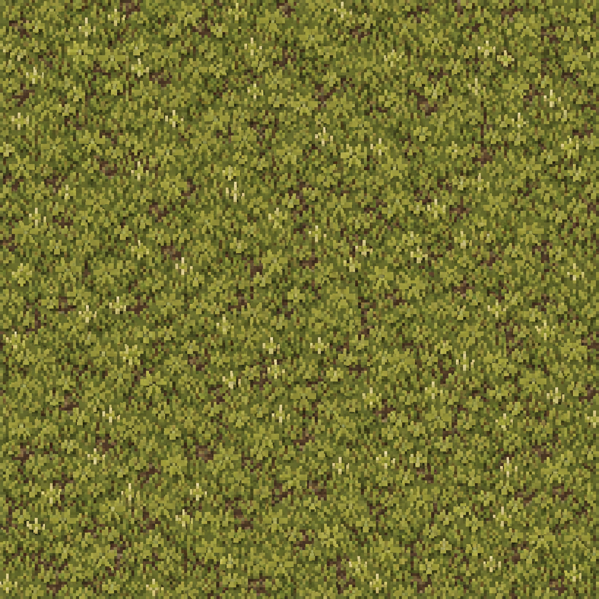
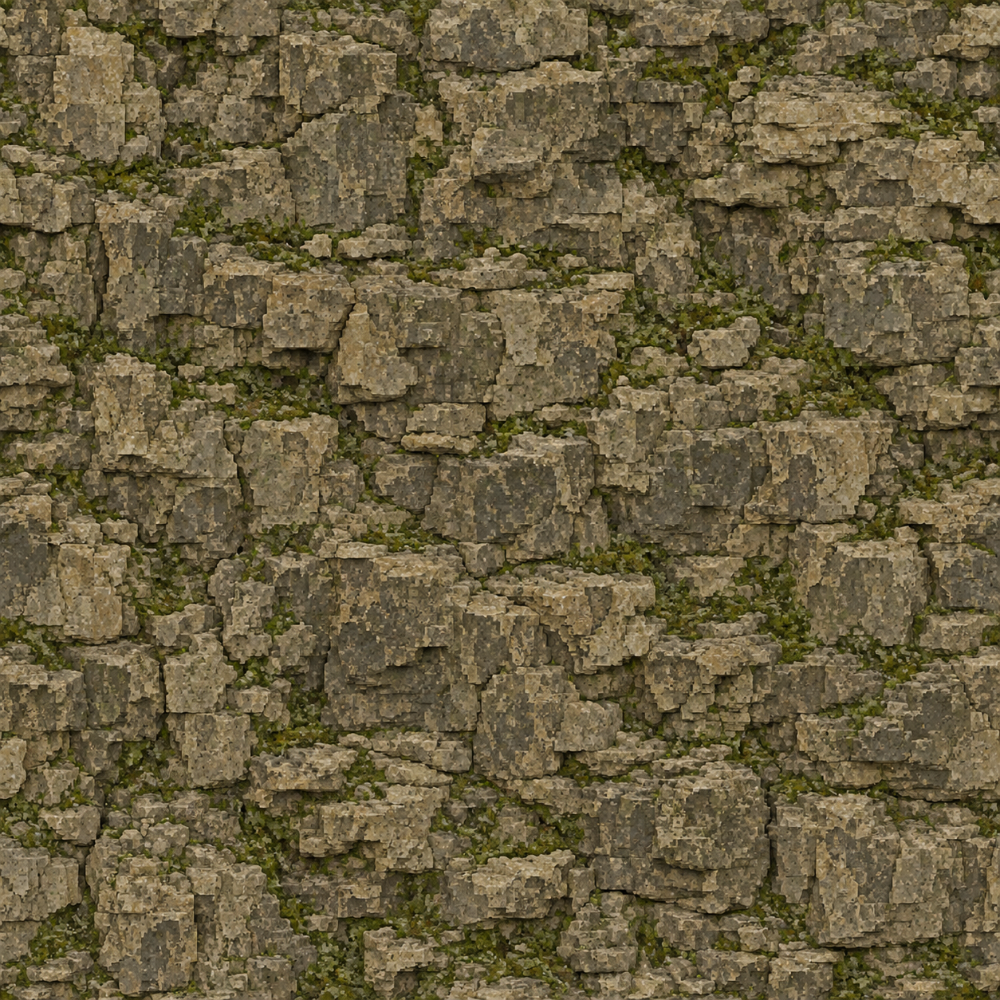
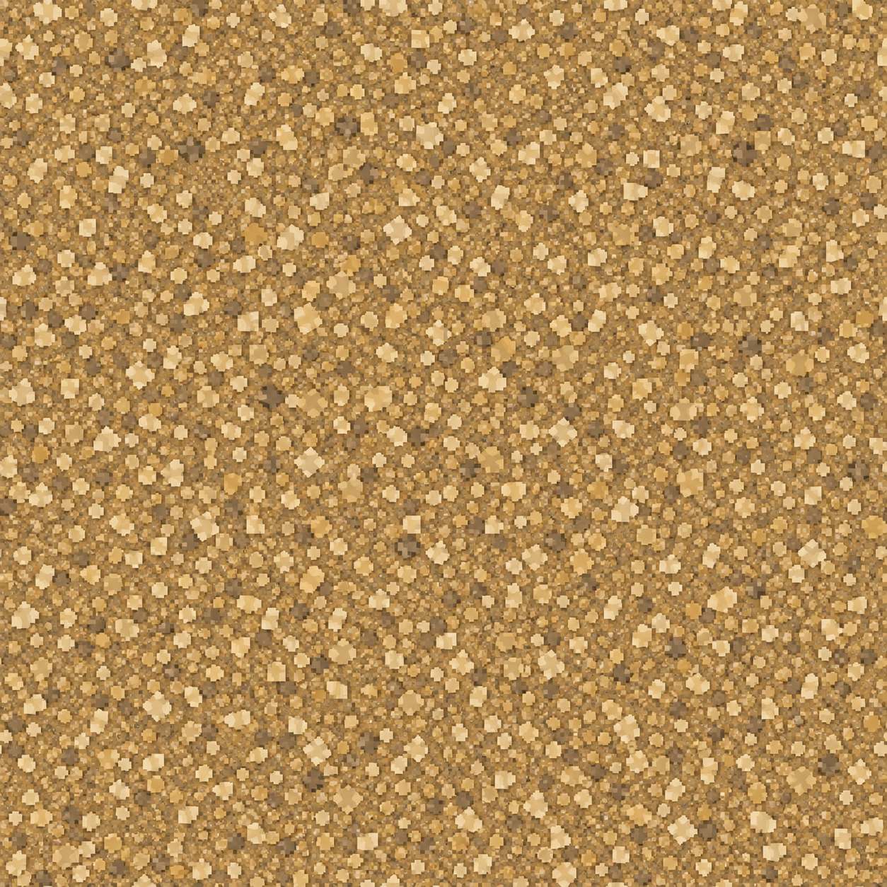

Terrarium · V5 terrain correction
Bring the landscape into the homestead’s world.
Native correction accepted
Physical terrain geometry, generated meadow/limestone/gravel albedos and native vegetation are inspected as one scene. The screenshots below show the actual Unreal map; generated source textures are separated below.
130 authored terrain mesh parts1,552,357 authored terrain triangles38,228 persisted mesh instances17,776 admitted groundcover/detail instances3,266 added grove trees
Actual editor result
Validation
| Surface bindings | Passed |
| Geometry and ground | Passed |
| Preservation and persistence | Passed |
| Real character routes | 8/8 passed |
| Forest runtime contacts | 12 sampled roots and isolated trunk bodies passed; full-world occlusion rays retained |
| New grove runtime contacts | 12 sampled roots and trunks passed |
Inspected all nine native Unreal views after save/reopen. Smooth mountain silhouettes are replaced by physical stepped shelves and stone risers, the home outer terrain is terraced, and meadow/gravel/limestone detail now uses generated albedo assets with working mipmaps. Woodland groves and groundcover fill route and settlement edges. Original home remains intact. Large settlement pads and repeated street plans remain visibly regular; this terrain correction is not a claim that every district is individually finished.
City viewpoint: 1,200 editor world-frame samples; mean 16.67 ms, p95 16.88 ms, max 17.53 ms.
Actual generated material sources
These PNGs are source albedos, not rendered world views. The native surface receipt checks imported Texture2D assets, material references, hashes and native mip/resampling settings.

T_VoxelMeadowGenerated albedo source; native material use checked separately
T_MossLimestoneGenerated albedo source; native material use checked separately
T_OchreGravelGenerated albedo source; native material use checked separatelyLimits
Traversal uses real CharacterMovement but teleports to each route’s initial start. Ground samples and forest rays do not cover every surface or prove complete navigation. Full-world trunk rays retain intervening terrain hits; separate terrain-ignored rays verify the intended trunk body. Frame observations include editor overhead; no shipping performance claim or automatic LOD smoothness claim is made. Source texture tiling must be judged in native images rather than inferred from its prompt.
Written receipts and handoff · Acceptance criteria and commands · Previous regional review